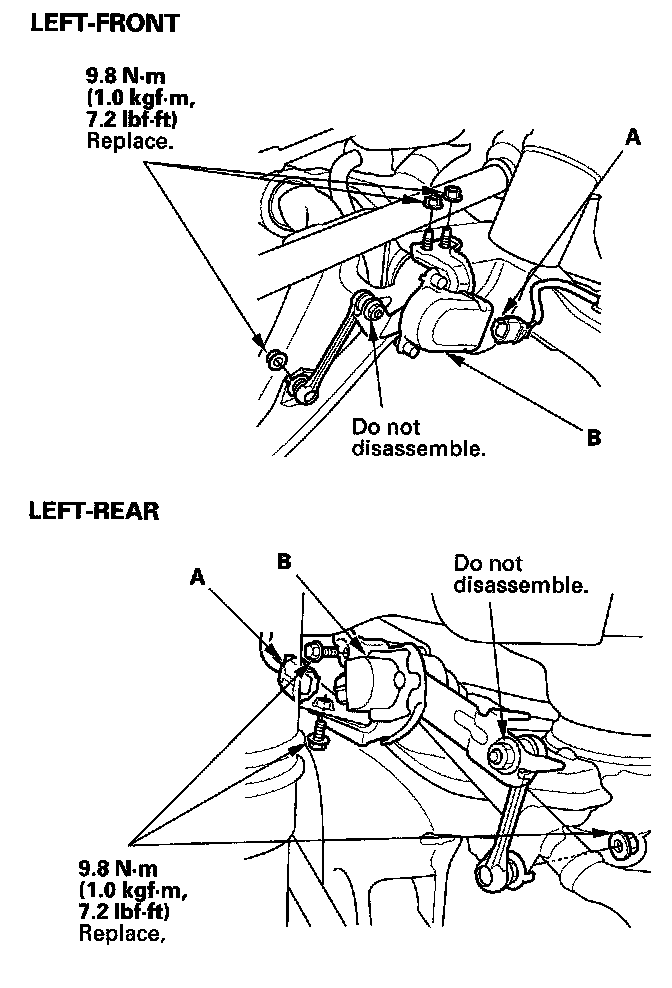

Headlamp Alignment Sensor: Service and Repair
Suspension Stroke Sensor ReplacementNOTE:
- Right side of suspension stroke sensor for active damper system is the same procedure as left side suspension stroke sensor.
- After install the rear suspension stroke sensor, do the memorizing rear suspension full rebound position.
1. Raise the vehicle, make sure it is securely supported.

2. Disconnect the 3P connector (A) from the suspension stroke sensor (B).
3. Remove the bolt and nut, then remove the suspension stroke sensor.
4. Install the sensor in the reverse order of removal.
5. After installing, do the headlight initial position learning procedure.